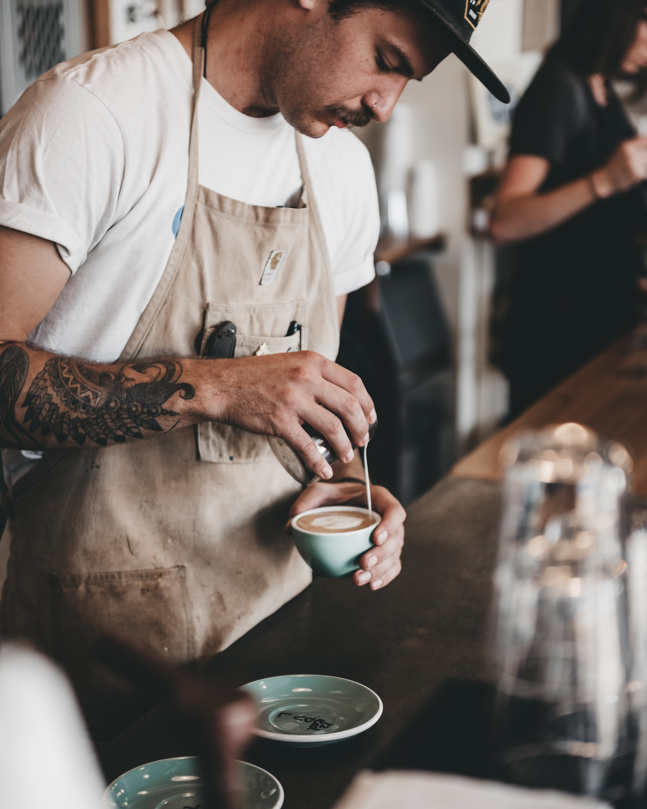
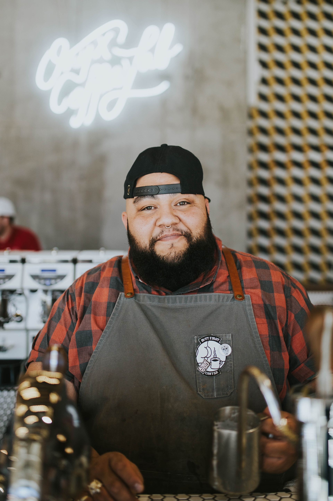
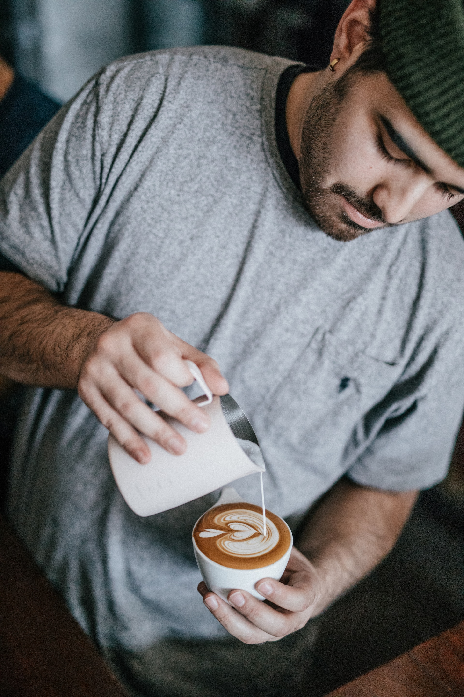
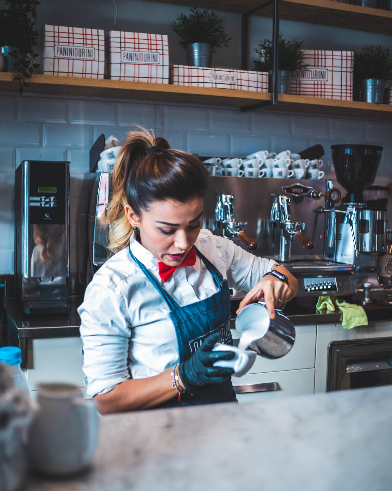
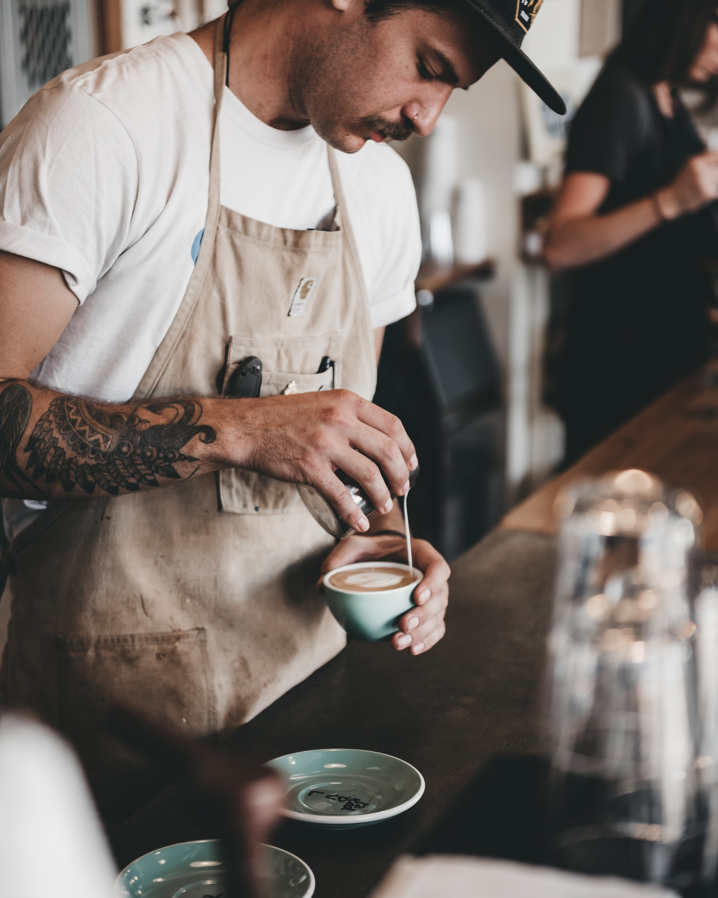
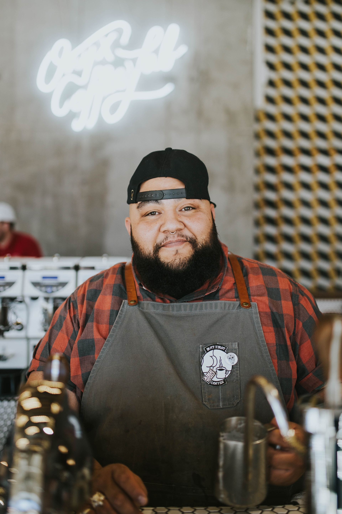
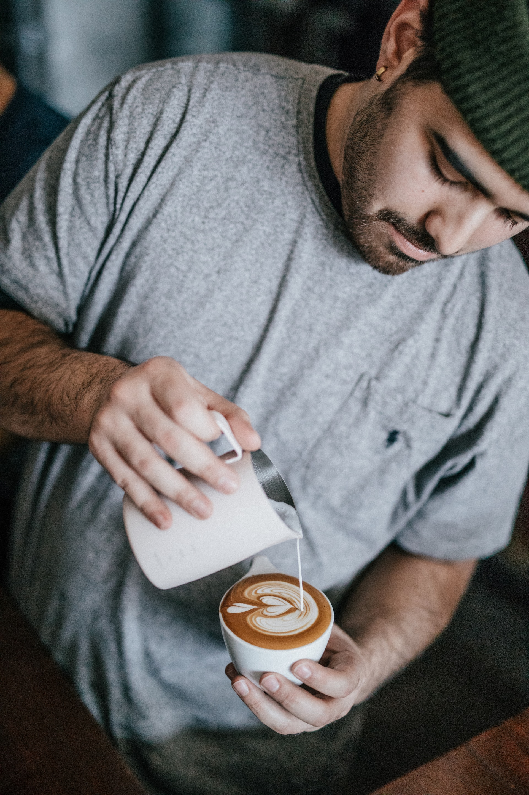
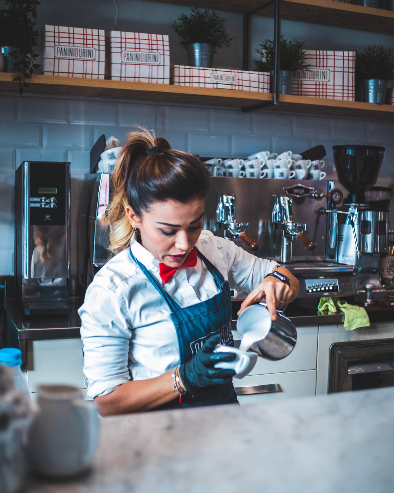

Üdvözöljük a Latte Lounge-ban!
A Latte Lounge egy oázis a kávé szerelmeseinek, ahol minden csésze egy történet, és minden korty egy utazás. Szívünk a frissen pörkölt kávéé, és elkötelezettek vagyunk abban, hogy a legjobb minőségű kávékülönlegességekkel kényeztessük vendégeinket.
De a Latte Lounge nem csak a kávéról szól - hangulatos környezetünk ideális helyszínt kínál a baráti találkozókhoz, munka utáni pihenéshez vagy akár egy kis olvasáshoz is. Friss sütemények, pazar teaspecialitások és különleges hideg italok is várják, hogy felfedezd őket.
Gyere, ülj le, és élvezd a Latte Lounge kényeztető atmoszféráját! Itt a kávé nem csupán ital, hanem élmény.

 






